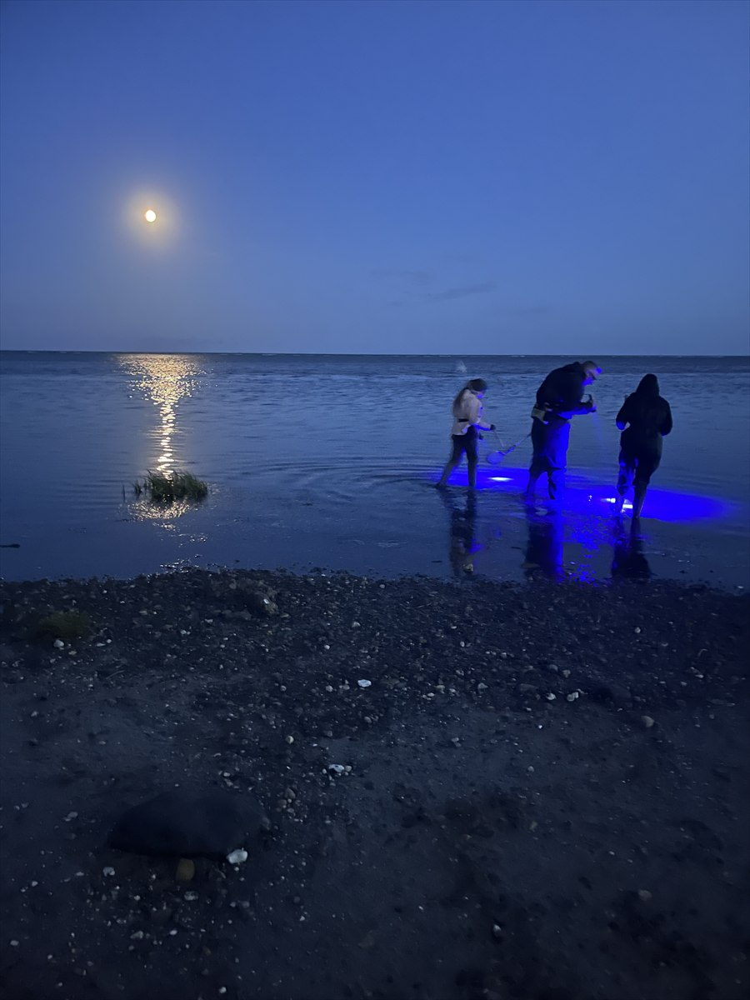

En vurdering – ikke et løfte
RavRadar beregner en RavScore ud fra vejr- og havdata. Lokale forhold kan altid afvige, og selv gode forhold er ingen garanti for fund.
Frivilligt projekt · gratis at bruge
Et værktøj til dig, der gerne vil bruge mindre tid på at gætte og mere tid på at lede de steder, hvor forholdene ser mest lovende ud.
Hvorfor RavRadar?
Mit navn er Jakob Jørgensen, og jeg står bag RavRadar. Ideen opstod, fordi ravjagt kræver, at man holder øje med mange ting på én gang: strøm, bølger, vind, vandstand, kystens retning og det vejrforløb, der gik forud.
Mit mål er at samle den viden i et værktøj, som er let at bruge. RavRadar skal ikke fortælle, præcis hvor et stykke rav ligger. Det skal hjælpe dig med at vælge et bedre tidspunkt og en mere lovende kyststrækning, så du får mest muligt ud af din ravjagt.
RavRadar er samtidig bygget, så du kan se så mange relevante data og forklaringer som muligt uden selv at skulle samle oplysningerne fra mange forskellige steder. Forhåbentlig gør det ikke kun valget af tid og sted lettere, men hjælper dig også med at lære lidt mere om, hvordan strøm, bølger, vind og kystens form påvirker ravjagten.
RavRadar beregner en RavScore ud fra vejr- og havdata. Lokale forhold kan altid afvige, og selv gode forhold er ingen garanti for fund.
Systemet er udviklet ved at samle faglig viden, data, praktiske erfaringer og mange timers analyse. Det bliver forbedret, når ny viden og virkelige ture viser, at noget kan gøres bedre.
RavRadar er gratis at bruge. Et frivilligt bidrag er altid valgfrit og giver hverken bedre scorer eller særlige funktioner.
RavRadar på hjemmeskærmen
Du kan lægge RavRadar på telefonens hjemmeskærm. Så åbner siden i sit eget vindue, ligesom en almindelig app.
RavRadar opdateres automatisk. Du skal fortsat have internetforbindelse for at hente friske prognoser.
Fællesskab på Facebook
I RavRadars Facebook-gruppe kan du tale med andre om RavRadar, ravjagt og fællesskabet omkring det hele. Del erfaringer, stil spørgsmål og følg med i samtalen.
Vigtigt om RavScore
RavScore fortæller, hvor gode forholdene er for den enkelte kyststrækning lige nu. Den sammenligner altså kysten med dens egne muligheder – ikke hvor meget rav der grundlæggende findes i hele området.
Nogle kyster og landsdele har naturligt bedre forudsætninger for ravjagt end andre. En strækning i Limfjorden kan derfor godt score 95, fordi forholdene dér er usædvanligt gode, mens en strækning ved Sæby scorer 75. Alligevel kan Sæby meget vel give mere rav, fordi udgangspunktet for ravjagt normalt er bedre dér.
Brug derfor RavScore som hjælp til at finde de bedste aktuelle forhold – ikke som et løfte om, at den højest placerede zone altid indeholder mest rav.
En model af virkeligheden
Vejr, vind, havstrømme og kyststrækninger spiller sammen på komplekse måder. Når reglerne skal omsættes til kode for hele Danmark, er det ikke muligt at beskrive enhver lokal undtagelse perfekt. Nogle gange er et kompromis nødvendigt, for at helheden bliver så brugbar og retvisende som muligt.
Du kan derfor støde på noget, der ser ud som en fejl. Det kan være en fejl, som jeg gerne vil høre om, men det kan også være en bevidst forenkling, fordi en mere detaljeret regel ville gøre vurderingen dårligere andre steder.

Ravjagt er også tid sammen
Jeg bruger selv mange timer ved kysten – også sammen med mine børn, når de en sjælden gang har lyst. For mig handler ravjagt både om nysgerrighed, natur, fordybelse og de oplevelser, man får undervejs. RavRadar er lavet for at hjælpe både nye og erfarne ravjægere med at få mere ud af netop de timer.
Et personligt fritidsprojekt
RavRadar er ikke blevet til som et hurtigt standardprojekt. Det har krævet rigtig mange timer at undersøge ravets bevægelse, opbygge modellerne, gennemgå kysterne, udvikle funktionerne og gøre forklaringerne forståelige.
Siden er gratis at bruge, men den har kostet penge at udvikle. Jeg betaler også løbende for blandt andet licenser, domæne og den øvrige drift, der holder RavRadar kørende og opdateret.
Hvis RavRadar har givet dig et bedre overblik eller en god tur ved kysten, må du gerne støtte projektet med et frivilligt beløb via MobilePay. Bidrag hjælper med de løbende udgifter til licenser og drift.
RavRadar er og bliver gratis at bruge, uanset om du støtter eller ej.
MobilePay Box: 4214MX
Åbn MobilePay-boksenhttps://qr.mobilepay.dk/box/8f2b226a-fd43-43f2-8610-1fa0df857c63/pay-in
Sådan virker RavRadar
Hvor er forholdene mest lovende, og hvornår er det værd at tage afsted? RavRadar hjælper dig med at sammenligne kyster og tidspunkter ved at samle hav- og vejrprognoser i én vurdering.
Bag kortets farver ligger tre spørgsmål: Kan bølgerne have sat materiale i bevægelse? Har strømmen understøttet transport mod kysten? Og hvor gode er forholdene til at lede? Svarene afhænger både af kystens retning, forholdene i den valgte time og forløbet inden.
RavScore vurderer forholdene — ikke mængden af rav. En score på 80 betyder ikke 80 procent fundchance. Den fortæller, at modellens tegn samlet er mere lovende end ved en lav score, ikke at stranden nødvendigvis er fuld af rav.
Til den hurtige turplanlægning: Vælg strand eller waders, sammenlign steder og tider, og åbn zonen for at læse forklaringen. Herunder kan du se, hvad der ligger bag vurderingen.
1 · Datagrundlaget
RavRadar henter automatisk prognoser for vind, bølger, strøm, vandstand og vandtemperatur. DMI er førstevalg. De forskellige oplysninger kommer fra forskellige vejr- og havmodeller; de er ikke målinger fra en vejrstation på hver strand.
Hvor de relevante DMI-data mangler, kan bestemte oplysninger suppleres med Copernicus Marine og derefter Open-Meteo. Der vælges en kilde til den enkelte oplysning, det enkelte sted og den enkelte time — ikke én leverandør til hele Danmark. Vandstand følger sin egen DMI-kæde og udfyldes ikke med et gæt fra de andre kilder.
Før beregningen kontrollerer RavRadar blandt andet dataenes kilde, sted og tidspunkt. Gyldige oplysninger gemmes til genbrug i en cache. Det gør det muligt at bygge videre på tidligere hentninger, men låser ikke vejrudsigten fast: Nyere, gyldige data kan overtage efter den fastlagte kildeprioritet.
Om leverandørernes data: DMI's bølgemodel, DMI's havmodel, Copernicus Marine og Open-Meteo.
2 · Den lokale kyst
RavRadars kystkort omfatter 210 zoner med i alt 673 lokale kystdele. En stor zone kan rumme kyster, der vender i forskellige retninger. Derfor er det ikke tilstrækkeligt at sige, at eksempelvis østgående strøm er god eller dårlig i hele området.
Hver kystdel har et fastlagt punkt på land og et på havet. Retningen fra havpunktet mod landpunktet angiver, hvad “ind mod land” betyder netop dér. Strømmens retning sammenholdes med denne retning — ikke blot med nord, syd, øst og vest.
På en vestvendt kyst ligger havet mod vest, så en østgående strøm har retning mod land. På en østvendt kyst kan den samme strøm gå væk fra land. Derfor kan to nærliggende kyster få forskellige vurderinger, selv om leverandørens strømdata ligner hinanden.
Leverandørernes havmodeller beregner strømmen i et net af punkter. RavRadar bruger de relevante modeldata ved kystdelens havområde. Det er stadig en modelværdi — ikke en strømmåler placeret præcis dér, hvor du står med din ravkese.
3 · RavScore fra 0 til 100
RavScore ligger mellem 0 og 100. Udgangspunktet er tre delvurderinger, også fra 0 til 100, som tæller forskelligt i det samlede resultat.
Regneeksempel med tilstrækkelig historik — ikke aktuelle vejrdata
Transport 70, bølgepåvirkning 60 og søgeforhold 80 giver:
35 + 18 + 16 = 69
Halvdelen af 70, 30 procent af 60 og 20 procent af 80. Her behøver modellens ekstra begrænsninger ikke sænke summen.
Gode forhold i ét led skal ikke uden videre kunne opveje meget svage forhold i et andet. Derfor har modellen også disse begrænsninger:
Til sidst vises scoren som et helt tal. Manglende historik håndteres særskilt; den forklaring finder du under tid og usikkerhed.
4 · Strømmens vinkel
Retningen er lige så vigtig. En strøm kan deles i en del, der går langs kysten, og en del, der går på tværs. Det er den kystrettede del — mod eller væk fra land — der bruges til at opbygge eller nedbryde transportpotentialet.
En strøm lige ind mod kysten giver det største indgående bidrag ved samme hastighed. Skrå strøm giver mindre. En strøm helt parallelt med kysten giver intet direkte ind- eller udgående bidrag i denne del af modellen. Det betyder ikke, at den er fysisk ligegyldig; materiale kan også flyttes langs en kyst, men RavRadar følger ikke hvert ravstykkes vej mellem nabostrande.
Vand kan bevæge sig hurtigt uden at komme nærmere stranden. Det sker, hvis strømmen løber langs kysten. Derfor ser RavRadar ikke kun på strømmens fart, men også på dens retning i forhold til kysten.
I figuren følger vandet den blå pil. Vi har valgt en fart på 8 centimeter hvert sekund som et enkelt eksempel. Når du flytter skyderen, ændrer du kun retningen — ikke farten.
Når pilen peger lige mod land, går hele bevægelsen ind mod kysten. Når den peger skråt, går bevægelsen både langs kysten og ind mod den. Vandet deler sig ikke i to strømme; det er én skrå bevægelse, som vi beskriver i to retninger.
Vinklens betydning ændres glidende, ikke i faste vinkeltrin. Ved 45 grader er den kystrettede hastighed cirka 71 procent af den samlede hastighed. En stærk, skrå strøm kan derfor give et større indgående bidrag end en meget svag strøm lige mod land. Om bidraget er stort nok til at tælle, afhænger også af styrken.
Transportpotentialet er modellens hukommelse for strømforløbet. Tænk på det som en beholder med plads til 0–100 point: Strøm mod land kan fylde op, og strøm væk fra land kan tære på det opbyggede potentiale. Det er ikke en beholder med en kendt mængde rav i.
Et kort øjeblik med pålandsstrøm giver derfor ikke automatisk en høj score. Omvendt forsvinder et godt forløb ikke nødvendigvis, fordi strømmen kort vender. Både styrke og varighed tæller, og efterhånden som gamle timer falder ud af hukommelsen, kan vurderingen også ændre sig.
Den kystrettede hastighed skal overstige 3 cm/s (0,03 m/s) for at bidrage. Fra 15 cm/s (0,15 m/s) tæller den som fuld styrke. Mellem de to grænser stiger styrkebidraget gradvist. Grænserne gælder i begge retninger.
En fuldt vægtet time med fuld indgående styrke kan lægge højst 10 point til transportpotentialet. En tilsvarende udgående time kan trække højst 8 fra. Svagere kystrettet strøm og ældre, lavere vægtede timer tæller mindre. Det er point i transportpotentialet — ikke 10 eller 8 point direkte på den samlede RavScore.
Der findes derfor ikke ét antal timer med pålandsstrøm, som altid giver grøn score. Startniveau, strømstyrke, vinkel, alder, bølgeforløb og søgemåde spiller sammen.
5 · Bølger
Rav kan ligge ved bunden, i kystnære aflejringer eller blandt andet materiale. Bølger kan være med til at løsne og flytte det, hvis det er tilgængeligt. RavRadar bruger bølgehøjden og bølgeperioden som en indikator for denne mulighed.
Bølgehøjde fortæller ikke hele historien. Også bølgeperioden — tiden mellem bølgerne — indgår. To situationer med samme bølgehøjde kan derfor give forskelligt bidrag. RavRadar bruger dem sammen som en indikator for bølgeenergi, ikke som en direkte måling af, hvad der sker ved havbunden.
Bølgepåvirkningen bygges gradvist op i modellen og aftager langsommere bagefter. Derfor kan tidligere bølgeaktivitet stadig tælle, når havet er blevet roligere. Det betyder ikke, at modellen ved, hvor længe et bestemt stykke rav bliver liggende.
Bølgerne bidrager til delscoren “Bølgernes mulighed for at flytte rav”. Tidligere bølgeaktivitet kan stadig tælle, selv om havet er blevet roligere.
De aktuelle bølger påvirker søgeforholdene. Store bølger kan altså både øge mobiliseringssignalet og gøre selve ravjagten vanskeligere.
Bølgernes forløb og retning indgår desuden som en begrænset korrektion af transportleddet. Den kan dæmpe det strømunderstøttede bidrag, men ikke skabe transport ud af ingenting. RavRadar beregner ikke præcist, hvor rav lander bag en bestemt revle.
Energiindikatoren er bølgehøjden ganget med sig selv og derefter med bølgeperioden. Dobbelt højde giver derfor fire gange så stor indikator ved samme periode — men ikke fire gange så høj RavScore. Indikatoren omsættes først til et deltal mellem 0 og 100.
Ved opbygning bruger modellen en halveringstid på 4 timer og ved aftagning 48 timer. Det betyder, at afstanden til et uændret nyt niveau halveres på henholdsvis 4 og 48 timer. Det er en regel for modellens tilpasning, ikke ravets levetid på stranden.
Baggrund om bølgernes højde, energi og periode: DMI's forklaring af bølger. RavRadars tidsregler og vægte er modellens egne arbejdsregler.
6 · Vind og søgemåde
Vind kan påvirke havet gennem bølger, vandstand og strøm. Men vindretningen fortæller ikke i sig selv, hvilken vej modelstrømmen går. RavRadar giver derfor ikke automatisk transportpoint, bare fordi vinden blæser mod land.
Vindens direkte rolle i scoren er søgeforholdene. Mere vind kan gøre vandoverfladen urolig, så det bliver sværere at se ned til bunden med en ravlygte. Vindens indirekte påvirkning af havet afspejles gennem de særskilte prognoser for blandt andet bølger og strøm — ikke gennem ekstra transportpoint for vindretningen alene.
Fordi den samme havtilstand ikke er lige egnet til begge former for jagt. Waders-vurderingen reagerer mere på vanskelige vind- og bølgeforhold, og den har loftet fra afsnittet om scoren: Gode transportforhold må ikke skjule, at det er svært at lede i vandet. Strandvurderingen har ikke dette ekstra loft.
I waders-vurderingen er vinden styrende, mens bølger kan forringe søgeforholdene yderligere. Du kan derfor ikke forvente, at store bølger udlignes af en fordelagtig strømretning. Vælg altid den søgemåde, du faktisk har tænkt dig at bruge.
Et forløb med bølgeaktivitet efterfulgt af roligere søgeforhold kan derfor se lovende ud i modellen. Det er ikke en regel om, at man altid skal vente til efter blæsevejr, og det er ikke et løfte om, at der er rav tilbage.
En grøn score er ikke en sikkerhedsgodkendelse. RavRadar vurderer ikke din erfaring, lokale render, pludselige bølger eller en sikker vandybde. Søgeforhold og sikkerhed er ikke det samme.
7 · De andre havoplysninger
Vandstanden hjælper dig med at vurdere, hvor vandkanten og de tilgængelige søgeområder kan ligge. Lavere vand kan blotlægge steder, som ellers er dækket. Højere vand kan flytte den aktive kystzone indad. Det er ikke i sig selv bevis for, at der er kommet rav ind.
Centimetertallet beskriver vandstanden i prognosen — ikke vanddybden dér, hvor du står. Det kan ikke bruges til at afgøre, hvor langt det er sikkert at gå ud.
Ændringen over tre timer ser fremad: Den sammenligner den valgte time med tre timer senere. Et minus betyder lavere vand senere; et plus betyder højere vand. Et lavt vandniveau kan altså godt være stigende, og et højt niveau faldende. Ændringen er ikke kun et mål for tidevand.
Tre-timersændringen kan mangle, selv om vandstanden for den valgte time findes. Den kræver også en gyldig prognose for tidspunktet tre timer senere.
Vandstand giver ikke direkte RavScore-point. Står to tidspunkter helt lige i score og historikkvalitet, kan lavere vand og derefter ikke-stigende vand dog afgøre, hvilket waders-tidspunkt der fremhæves. Det ændrer ikke selve scoren.
Vandtemperaturen vises som en ekstra oplysning om forholdene. Den giver ikke en særskilt bonus eller straf i den nuværende scoremodel. Du skal derfor ikke læse en høj score som en vurdering af, om temperaturen passer til din tur.
8 · Tid og usikkerhed
Du kan godt se en strømpil væk fra land og samtidig se en forholdsvis høj score. Det kan skyldes, at timerne inden havde et stærkt indgående forløb. Du kan også se en pil mod land uden en høj score, fordi påvirkningen endnu er svag eller kort, fordi bølgerne har bidraget lidt, eller fordi søgeforholdene er dårlige.
“Historik” betyder timerne før det tidspunkt, du ser på — ikke nødvendigvis før i dag. Ser du fredag på mandagens prognose, kan mandagens score bygge på prognoserne for strømmen lørdag og søndag. Det er stadig prognoser, ikke allerede oplevet vejr. Der bruges ikke tirsdagsvejr til at forklare mandagens score.
Der er forskel på manglende vejrdata for den valgte time og manglende viden om timerne inden. Mangler nødvendige aktuelle input, kan scoren være utilgængelig. Findes de aktuelle input, men er det tidligere forløb delvist ukendt, kan modellen vise en forsigtig score sammen med et interval.
Intervallet viser, hvor meget netop den manglende historik kan påvirke beregningen. Den viste score tager udgangspunkt i den forsigtige ende. Ukendte timer regnes ikke som dokumenteret nul strøm eller vindstille. Intervallet er hverken en fundchance eller et samlet mål for al usikkerhed i vejret og ravjagten.
To steder med næsten samme score kan derfor have forskelligt grundlag. Læs historikmarkeringen og intervallet med, især når du sammenligner meget tætte resultater.
“Historik fuldstændig” betyder derfor ikke, at alle lokale forhold er kendt, eller at prognosen er sikker. Modellen kender stadig ikke det lokale ravlager og alle forhold helt inde ved stranden.
Et hul i én kystdels aktuelle data behøver ikke fjerne vurderingen af hele zonen. Andre dele kan stadig have gyldige scorer. Se derfor også, om zoneoplysningerne kun dækker en del af området.
9 · Fra beregning til kort
Kystens farve viser RavScore for den valgte søgemåde og den viste time. Pile viser retning, mens farven samler flere forhold og deres forløb. Derfor behøver pil og farve ikke fortælle den samme enkle historie.
En stjerne markerer en særligt høj modelscore, fra 90 og op. Hverken den grønne farve eller stjernen fortæller, hvor meget rav der faktisk ligger.
Skyderen vælger en allerede beregnet prognosetime. Den ændrer ikke scoremodellen og starter ikke en ny vejrhentning. Hvor langt du kan se frem, afhænger af de tilgængelige timer i den aktuelle prognose.
10 · Når du åbner en zone
Når en strækning ser interessant ud, åbner du zonen for at se, hvad vurderingen bygger på. Begynd med at kontrollere søgemåde, dag og klokkeslæt. En god score mandag morgen er ikke nødvendigvis en god score mandag eftermiddag.
Har du flyttet tidsskyderen og trykker på en zone på kortet, følger zonevisningen den valgte prognosetime. Åbner du derimod en zone fra forsiden gennem femdøgnsprognosen, nulstilles kortets tidsvalg til “Nu”. Aktuelt-listen viser fortsat forholdene nu. Tidsangivelsen er derfor vigtig, når du sammenligner visninger.
11 · Det vigtige forbehold
RavRadar ser ikke det aktuelle pindelag, undersøger ikke stranden med et kamera og ved ikke, om andre allerede har samlet det tilgængelige rav. Modellen kender heller ikke den præcise mængde rav i havbunden eller alle lokale revler, render og læforhold.
En grøn strækning kan derfor være tom — også for pindelag — og du kan finde rav ved en lav score. Forskellige kyster har heller ikke samme grundlæggende ravrigdom. Scoren vurderer forholdene; den dokumenterer ikke, at en bestemt kyst rummer mere rav end en anden.
Modellens vægte, tidsregler og grænser er valgte arbejdsregler, ikke naturkonstanter. RavScore er endnu ikke kalibreret til en bestemt fundchance ud fra et repræsentativt sæt virkelige ture. Det er netop derfor, tallet skal læses som en hjælp til at sammenligne muligheder, ikke som en fundgaranti.
Kort sagt: Brug kortet til at finde muligheder, zoneforklaringen til at forstå dem og dine egne observationer til at vurdere stedet. RavRadar hjælper med beslutningen — det afgør ikke, hvad du finder.
Kontakt
Jeg vil gerne høre fra dig, hvis du opdager en fejl, har en idé eller vil dele en erfaring, som kan gøre RavRadar bedre.